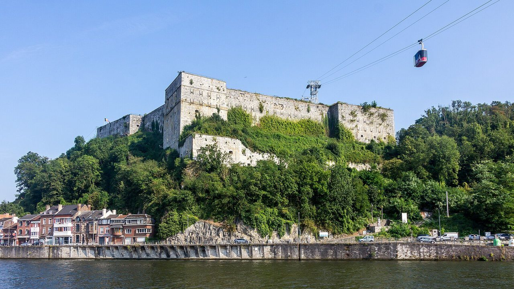

Race, Mur de Huy

Behind
Best +0:01
371W
Target 418 W-47 W
- Cadence
- 87rpm
- Heart
- 140bpm
- Speed
- 26.5km/h
Recover14 of 26
1:56
Next: · 0:10 at level 24
-4.7%
334 m climbed
6.53 km
11
Resistance / 32
Solo races your best-time ghost: position reads Ahead or Behind, and solo alone gets a Pause button. Frozen at 15:04.